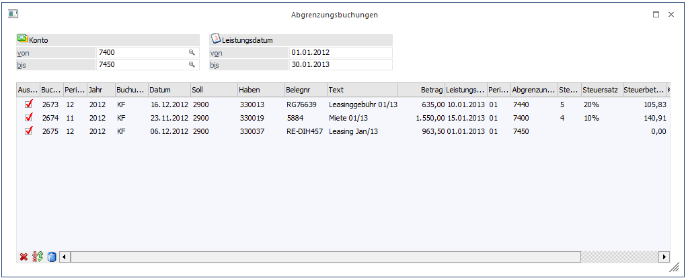
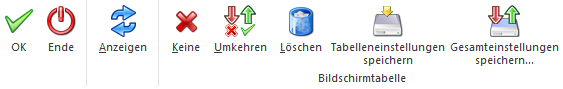
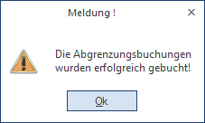

Geschäftsfälle, deren Leistungsdatum im Folgejahr oder in einer anderen Periode liegt, können erfasst werden. Damit der Geschäftsfall sofort im Journal, im Kontoblatt sowie auch im OP-Blatt mit der zutreffenden Leistungsperiode ersichtlich ist, wird die Buchung über ein Abgrenzungskonto abgewickelt. Diese Buchungszeilen (Abgrenzungsbuchungen) werden in dem Programm Buchen Dialog-Stapel erfasst und können im nachfolgenden Wirtschaftsjahr / Periode jederzeit (gemäß dem vorgegebenen Leistungsdatum) in dem Programm Abgrenzungsbuchungen aufgelöst werden, damit sie in der richtigen Leistungsperiode erfolgswirksam werden.
Um mit den Abgrenzungsbuchungen arbeiten zu können, muss in den FIBU-Parametern ein Abgrenzungskonto eingetragen sein. Das Abgrenzungskonto muss ein Sachkonto sein, darf kein Steuerkennzeichen, keine Kostenart und keine Fremdwährung eingetragen haben. Das Konto darf auch kein Anlagen- und auch kein Zahlungsmittel-Konto sein.
Im WinLine Start in dem Menüpunkt…
1 Parameter
1 Applikations-Parameter
1 FIBU-Parameter
… gibt es in dem Register Buchen die Möglichkeit, das Abgrenzungskonto zu hinterlegen.
In dem Menüpunkt…
1 WinLine FIBU
1 Buchen
1 Buchen
1 Dialog-Stapel / Dialog-Stapel Quick
…werden die Abgrenzungsbuchungen erfasst.
Wird das Abgrenzungskonto aus den FIBU-Parametern in einer Buchung als Soll-/Haben-Konto verwendet, muss in der Buchungszeile in einer weiteren Spalte ein Abgrenzungskonto, z.B. das Aufwands- oder Erlöskonto und das Leistungsdatum sowie ggf. eine Kostenstelle eingetragen werden.
Wird das Abgrenzungskonto nicht verwendet, so kann trotzdem ein Leistungsdatum hinterlegt werden. Die Felder Abgrenzungskonto und Kostenstelle können dann nicht gefüllt werden. Dieses Leistungsdatum wird dann für die Abgrenzung der Skontobuchung (sofern mit Skonto gezahlt wurde) verwendet. Die Skontobuchung wird in diesem Fall immer mit dem Abgrenzungskonto aus den FIBU-Parametern bebucht.
Beispiel
Ein Kreditor schickt im Dezember 2012 eine Rechnung über die Leasinggebühr für Januar 2013. Gebucht wird im Dezember, erfolgswirksam ist diese Rechnung aber erst im Januar 2013.
Die Faktura wird im Dezember 2012 auf das im FIBU-Parameter hinterlegte Abgrenzungskonto gebucht (Abgrenzungskonto an Kreditor). In der Buchungszeile gibt es die Spalte "Abgrenzungskonto", in die das Konto für die Leasinggebühren eingetragen wird. Zusätzlich wird noch das Leistungsdatum im Januar 2013 und evtl. die Kostenstelle eingetragen.

Die Abgrenzungsbuchungen werden über den Menüpunkt
1 Buchen
1 Abgrenzungsbuchungen
durchgeführt.
Ø Konto von - bis
Hier können die Abgrenzungskonten ausgewählt werden, deren Buchungen in der unteren Tabelle angezeigt werden sollen.
Ø Leistungsdatum von - bis
Hier wird eine Eingrenzung des Leistungsdatums vorgenommen.
Folgende Informationen sind in der Tabelle ersichtlich:
Ø Auswahl
Wird die Checkbox aktiviert, wird diese Zeile als Abgrenzungsbuchung verbucht.
Ø Buchnr.
Anzeige der Buchungsnummer. Beim Doppelklick auf die Buchungsnummer öffnet sich die Buchungs-Info.
Ø Periode
Ø Jahr
Ø Buchungsart
Ø Datum
Ø Soll
Ø Haben
Ø Belegnr
Ø Text
Ø Betrag
Diese Informationen aus der ursprünglichen Abgrenzungsbuchung werden angezeigt und können nicht editiert werden.
Folgende Informationen sind in der Tabelle ersichtlich und können editiert werden:
Ø Leistungsdatum
Das ursprünglich erfasste Leistungsdatum kann geändert werden.
Ø Periode
Die Periode wird entsprechend dem Leistungsdatum geändert.
Ø Abgrenzungskonto
Hier wird das Abgrenzungskonto aus der ursprünglichen Abgrenzungsbuchung vorgeschlagen, es kann aber noch editiert werden.
Ø Steuerzeile
Die Steuerzeile aus dem Abgrenzungskonto wird vorgeschlagen. Die Steuerzeile kann nur für Konten editiert werden, die ein Steuerkennzeichen eingetragen haben.
Ø Steuersatz
Ø Steuerbetrag
Der Steuersatz und Steuerbetrag wird aus der Steuerzeile ermittelt und berechnet.
Ø Kostenstelle
Ø Kostenträger
Kostenstelle und Kostenträger sind nur editierbar, wenn beim eingegebenen Abgrenzungskonto eine Kostenart hinterlegt ist.
Buttons

Ø Tabelleneinstellungen speichern
Die Spalten einer Tabelle können grundsätzlich an beliebige Positionen verschoben, bzw. in der Breite entsprechend angepasst werden. Durch Anwahl des Buttons "Tabelleneinstellungen speichern" werden die Einstellungen benutzerspezifisch gespeichert und bei dem nächsten Aufruf des Programmpunktes wieder vorgeschlagen.
Ø Gesamteinstellungen speichern
Im Gegensatz zu "Tabelleneinstellungen speichern" können mit "Gesamteinstellungen speichern" mehrere Tabellenaufbauten gespeichert und nach Wunsch geladen werden. Zusätzlich werden Sonderfunktionen der Tabelle (z.B. "Spalte gruppieren") ebenfalls bei der Speicherung bedacht.
Ø Keine
Durch Anklicken des Keine-Buttons werden alle Abgrenzungsbuchungen deselektiert.
Ø Umkehren
Durch Anklicken des Umkehr-Buttons werden alle vorgenommenen Selektionen in das Gegenteil umgewandelt - selektierte Abgrenzungsbuchungen werden deselektiert, deselektierte Abgrenzungsbuchungen werden selektiert.
Ø Löschen
Mit dem Löschen-Button werden die Abgrenzungs-Informationen aus der Buchung gelöscht. In diesem Fall wird keine Umbuchung durchgeführt, die Buchung wird danach auch nicht mehr zur Umbuchung in dem Programm Abgrenzungsbuchungen vorgeschlagen.
Ø Anzeigen
Über den Anzeigen-Button werden alle Abgrenzungsbuchungen in der Tabelle angezeigt und für die Umbuchung vorgeschlagen.
Ø Ende
Durch Anklicken des Ende-Buttons bzw. durch Drücken der ESC-Taste wird das Fenster geschlossen. Alle vorgenommenen Änderungen gehen verloren.
Ø OK
Durch Anklicken des OK-Buttons bzw. durch Drücken der F5-Taste werden alle selektierten Abgrenzungsbuchungen aufgelöst bzw. verbucht.
